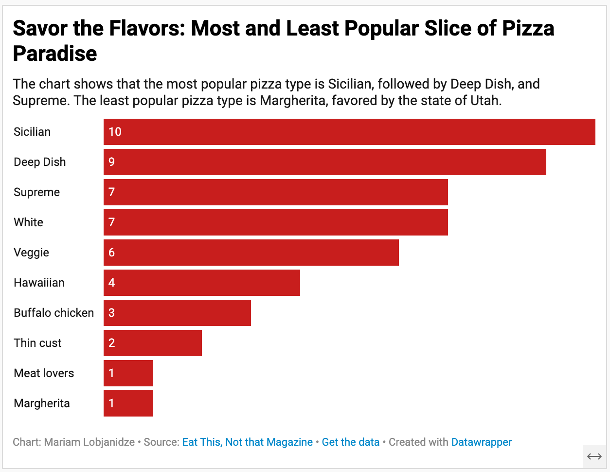

As a foodie and pizza connoisseur, I like trying local pizza no matter which state or country I am in! While most kinds of pizza are beloved by many, some still cause controversy (Especially when New Yorkers are Chicagoans are in the same room). From the midwestern deep dish pizza to Sicilian pizza, my project explores which kinds of pizzas are the most popular in each state.
1. Sicilian is the most popular pizza ordered across the states with 10 states picking this thick, satisfying square slice. It’s also very popular in New York—a city known for its iconic Neopolitan-style pizza also known as the New York style pizza mostly because of its large Italian immigrant population. This delight— fluffy, spongy bread base topped with a meatless sauce made from tomatoes, onions, herbs, and anchovies is also favored by states such as Florida, Arizona, Nevada, new Mexico, Mississippi, West Virginia, and Delaware.
2. The next one on the list is the Chicago style Deep Dish Pizza or in other words something that a lot of midwesterners especially native Chicagoans would absolutely go to war for! Deep Dish is baked in a pan and layered with cheese, fillings like meat and vegetables, and sauce–in that order. Why is Deep Dish so strongly associated with Chicago, you might ask? Well, it’s because this pizza style was literally invented in Chicago and has been native to it for many years now. 3. The third most popular type is Supreme. This type of pizza is popular because it offers different types of toppings. No matter if you like sweet or savory toppings, Supreme can offer something to everyone. This type of pizza is the most popular in the south, specifically in Texas, Louisiana, Oklahoma, Kansas, and Tennessee as well is Wyoming.  To find my CSV files and data, visit my GitHub profile